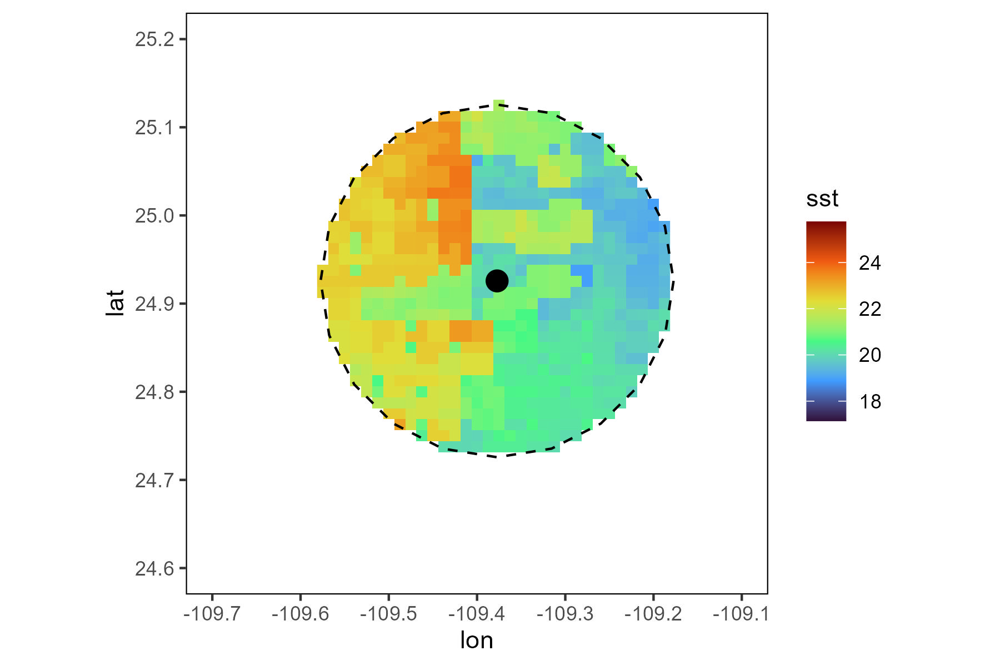

library("rerddap")Create a buffer
R
ggplot2
English
Y2024
tracking
This post is about how to create a spatial buffer of 1 km around a point.
Intro
In this blog, a buffer subsetting environmental data would be created and the average values within the buffer calculated.
1. Download data
Load the package rerddap
SST_info <- info('erdMWsstd1day_LonPM180')To subset the data select the coordinates of a smaller area.
lonmin<--111
lonmax<--109
latmin<-23
latmax<-27To download, provide the parameters such as the server, the coordinates and the time frame. It takes some time to download.
SST_values<-griddap(SST_info,
latitude= c(latmin, latmax), longitude = c(lonmin, lonmax),
time = c('2023-03-01T00:00:00Z','2023-03-30T00:00:00Z'),
fields = 'sst')To access the data as data frame, extract the data.
SST_df<-SST_values$dataUsing functions from the package tidyverse, remove all NAs.
library(tidyverse)SST_dfclean<-SST_df %>%
filter(sst!='NaN')Map
Check data downloaded using ggplot.
library(ggplot2)Download data from land from the package rworldmap.
library(rworldmap)The function getMap() loads the map in your environment.
world_map <- getMap()To plot using ggplot a data frame is recommended. Use the function fortify to be able to get the data in a data frame format.
world_points <- fortify(world_map)
world_points$region <- world_points$id
world_df <-world_points[,c("long","lat","group", "region")]ggplot() +
geom_raster(data=SST_dfclean,aes(x=longitude, y=latitude, fill = sst))+ scale_fill_viridis_c(option = "H")+
geom_polygon(data = world_df, aes(x = long, y = lat, group = group), colour = '#403d39', fill = "#e5e5e5") +
coord_sf(xlim = c(-109.7,-109.1),ylim = c(24.6,25.2))2. Create buffer
Load package sp.
library(sp)Give coordinates from the central point.
This_point<-data.frame(Longitude=-109.37728617302638,Latitude=24.92572600240793)Use this custom function to create a buffer. Note that it uses epsg 4236, adjust if necessary.
create_buffer<-function(central_point=central_point, buffer_km=buffer_km){
central_spatial<- sp::SpatialPoints(cbind(central_point$Longitude,central_point$Latitude))
sp::proj4string(central_spatial)= sp::CRS("+init=epsg:4326")
central_spatial <- sp::spTransform(central_spatial, sp::CRS("+init=epsg:4326"))
central_spatial<-sf::st_as_sf(central_spatial)
buffer_dist<-buffer_km*1000
central_buffer<-sf::st_buffer(central_spatial, buffer_dist)
return(central_buffer)
}The central point and the kilometers are the arguments needed.
This_buffer<-create_buffer(central_point=This_point,buffer_km=20)Confirm that the buffer is not a SpatialPolygons.
class(This_buffer)Map
Use ggplot to create the map.
Use the functions geom_raster to plot the SST data.
The function geom_polygon to plot the base maps data.
The function geom_polygon to plot the buffer.
Adjust to your corresponding area on the coord_sf.
ggplot() +
geom_raster(data=SST_dfclean,aes(x=longitude, y=latitude, fill = sst))+ scale_fill_viridis_c(option = "H")+
geom_polygon(data = world_df, aes(x = long, y = lat, group = group), colour = '#403d39', fill = "#e5e5e5") +
coord_sf(xlim = c(-109.7,-109.1),ylim = c(24.6,25.2))+
geom_polygon(data=This_buffer,aes(x = long, y = lat, group = group),colour='black', fill='transparent', linetype='dashed')+
geom_point(data=This_point, aes(x=Longitude, y=Latitude), colour = "black", size = 4)3. Extract information
Convert the SST data into a SpatialPointsDataFrame.
SST_sp <- SST_dfclean
sp::coordinates(SST_sp) <- ~longitude + latitude
sp::proj4string(SST_sp) = sp::CRS("+init=epsg:4326")Use the function over from the package sp to extract the SST data using the buffer.
SST_buffer<- over(SST_sp,This_buffer)The SST values that fall inside the buffer are now added as a column named sst_inside in the data frame.
SST_dfclean$sst_inside <- as.numeric(SST_buffer)The values that fall inside the buffer are shown as 1.
To keep only the data inside the buffer select only those rows with values inside the buffer using the function filter.
SST_inside<-SST_dfclean %>%
filter(sst_inside==1)%>%
drop_na(sst)Subset
To plot the SST data, select the information from the new data frame SST_inside and the function geom_raster to plot the information.
ggplot() +
geom_raster(data=SST_inside,aes(x=longitude, y=latitude, fill = sst))+ scale_fill_viridis_c(option = "H")+
geom_polygon(data = world_df, aes(x = long, y = lat, group = group), colour = '#403d39', fill = "#e5e5e5") +
coord_sf(xlim = c(-109.7,-109.1),ylim = c(24.6,25.2))+
geom_polygon(data=This_buffer,aes(x = long, y = lat, group = group),colour='black', fill='transparent', linetype='dashed')+
geom_point(data=This_point, aes(x=Longitude, y=Latitude), colour = "black", size = 4)+
theme(panel.background = element_blank(),
panel.border = element_rect(colour = "black", fill='transparent'))Use the values inside the buffer to calculate the average SST
mean(SST_inside$sst)
sd(SST_inside$sst)
End of document